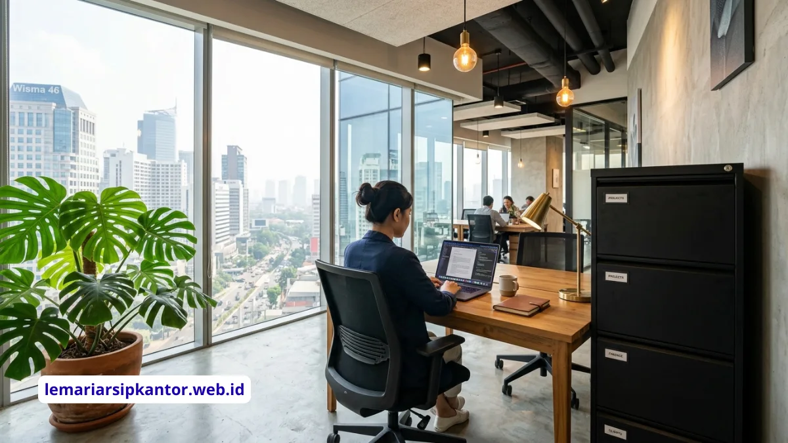

File cabinet 4 laci besi adalah lemari penyimpanan dokumen dengan empat tingkat laci yang umumnya dilengkapi sistem anti-tilt, sehingga tidak mudah terguling saat salah satu laci ditarik penuh oleh pengguna.
Apa Kelebihan File Cabinet 4 Laci Besi Dibanding Model Lain?
Kelebihan utama file cabinet 4 laci besi adalah kapasitas penyimpanan yang lebih besar dibanding model 2 atau 3 laci, sementara tetap menggunakan luas lantai yang sama.
Dengan konfigurasi empat laci, dokumen dapat dikategorikan lebih detail, misalnya laci pertama untuk dokumen aktif, laci kedua untuk arsip bulan berjalan, dan laci berikutnya untuk arsip tahun sebelumnya.
Material besi pada bodi dan laci juga memberikan perlindungan tambahan terhadap kelembapan dan risiko kebakaran ringan dibanding lemari berbahan kayu atau plastik.
Mengapa Sistem Anti-Tilt Penting pada File Cabinet 4 Laci?
Sistem anti-tilt penting pada file cabinet 4 laci karena tinggi unit yang lebih besar membuat titik berat mudah bergeser ke depan saat laci bagian atas ditarik penuh dalam kondisi berisi dokumen.
Tanpa sistem ini, menarik laci teratas secara penuh berpotensi membuat file cabinet kehilangan keseimbangan dan terguling ke arah pengguna, terutama jika laci di bawahnya masih dalam posisi tertutup.
Mekanisme anti-tilt umumnya bekerja dengan sistem interlock, yang secara otomatis mengunci laci lain agar tidak dapat dibuka bersamaan, sehingga keseimbangan unit tetap terjaga sepanjang waktu.

Ilustrasi: Penempatan file cabinet besi dalam lingkungan kantor berdesain modern.
Apa yang Perlu Diperhatikan Saat Memilih File Cabinet Besi?
Hal yang perlu diperhatikan saat memilih file cabinet besi meliputi ketebalan material, sistem penguncian, kapasitas beban laci, dan ada tidaknya fitur anti-tilt.
Beberapa poin penting yang sebaiknya dicek sebelum membeli:
- Ketebalan plat besi, karena material yang terlalu tipis lebih mudah penyok.
- Kapasitas beban per laci, agar sesuai dengan volume dokumen yang akan disimpan.
- Jenis kunci, apakah kunci tunggal untuk semua laci atau kunci terpisah per laci.
- Kualitas rel laci, karena rel yang buruk dapat membuat laci macet saat sering digunakan.
- Sertifikasi keamanan atau garansi produk dari produsen.
Bagaimana Cara Menempatkan File Cabinet 4 Laci agar Stabil?
Cara menempatkan file cabinet 4 laci agar stabil adalah dengan meletakkannya di permukaan lantai yang rata dan kokoh, serta menghindari penumpukan beban berlebih pada laci bagian atas saja.
Lantai yang tidak rata dapat membuat unit sedikit miring, yang pada akhirnya memengaruhi kinerja sistem anti-tilt.
Selain itu, sebaiknya distribusikan dokumen secara merata pada seluruh laci, bukan hanya menumpuk pada satu atau dua laci teratas, agar titik berat unit tetap seimbang dalam jangka panjang.
Untuk Kebutuhan Apa Saja File Cabinet 4 Laci Besi Digunakan?
File cabinet 4 laci besi umumnya digunakan untuk menyimpan dokumen administrasi kantor seperti kontrak, invoice, data karyawan, hingga arsip keuangan yang memerlukan akses rutin.
Kantor dengan volume dokumen tinggi, seperti divisi keuangan, sumber daya manusia, dan legal, sering memilih file cabinet 4 laci karena kapasitasnya yang lebih besar dibanding lemari 2 laci, namun tetap ringkas dibanding lemari arsip berukuran besar.
Berapa Kisaran Harga File Cabinet 4 Laci Besi di Pasaran?
Kisaran harga file cabinet 4 laci besi umumnya dipengaruhi oleh ketebalan material, merek, serta fitur tambahan seperti sistem anti-tilt dan kunci ganda.
Produk dengan ketebalan plat lebih tinggi dan fitur keamanan lebih lengkap cenderung berada di kisaran harga yang lebih tinggi dibanding model dasar tanpa fitur tambahan.
Selain itu, finishing permukaan seperti cat bubuk (powder coating) yang tahan gores juga dapat memengaruhi harga akhir.
Sebagai bahan pertimbangan, sebaiknya bandingkan spesifikasi lengkap dari beberapa produsen, bukan hanya berdasarkan angka harga semata, karena unit yang lebih murah namun tanpa fitur anti-tilt dapat menimbulkan risiko keselamatan kerja dalam jangka panjang.
Apa Perbedaan File Cabinet 4 Laci dengan Lemari Arsip Konvensional?
Perbedaan utama file cabinet 4 laci dengan lemari arsip konvensional terletak pada sistem akses dokumen, di mana file cabinet menggunakan laci yang ditarik keluar, sementara lemari konvensional umumnya menggunakan pintu yang dibuka untuk mengakses rak di dalamnya.
Sistem laci pada file cabinet memungkinkan penataan dokumen secara vertikal menggunakan gantungan folder (hanging file), sehingga pencarian dokumen berdasarkan kategori menjadi lebih cepat.
Sebaliknya, lemari konvensional dengan rak datar biasanya menyimpan dokumen dalam bentuk tumpukan atau folder yang disusun horizontal, yang dapat memperlambat proses pencarian jika volume dokumen sangat banyak.
Karena itu, file cabinet 4 laci lebih sering dipilih untuk dokumen yang memerlukan akses rutin dan kategorisasi yang jelas.
Bagaimana Cara Mengorganisir Dokumen di Dalam File Cabinet 4 Laci?
Cara mengorganisir dokumen di dalam file cabinet 4 laci adalah dengan mengelompokkan berdasarkan kategori, periode waktu, atau tingkat urgensi akses pada masing-masing laci.
Beberapa pendekatan pengorganisasian yang umum diterapkan di kantor:
- Laci pertama untuk dokumen yang sedang aktif diproses atau sering diakses harian.
- Laci kedua untuk arsip bulan berjalan yang sesekali masih perlu dirujuk.
- Laci ketiga untuk arsip tahun sebelumnya yang jarang diakses namun tetap wajib disimpan.
- Laci keempat untuk dokumen dengan tingkat kerahasiaan lebih tinggi, dilengkapi kunci tambahan jika tersedia.
- Penggunaan label warna pada folder gantung untuk mempercepat identifikasi kategori dokumen.
Sistem pengorganisasian yang konsisten akan sangat membantu staf baru memahami struktur penyimpanan tanpa harus bertanya berulang kali kepada rekan kerja lain.
Apa Saja Fitur Tambahan yang Perlu Dipertimbangkan pada File Cabinet Modern?
Fitur tambahan yang perlu dipertimbangkan pada file cabinet modern meliputi rel laci dengan bantalan bola (ball bearing), sudut lemari yang membulat untuk keamanan, serta lapisan anti karat pada bagian dalam laci.
Rel dengan bantalan bola membuat laci dapat ditarik lebih halus meski dalam kondisi penuh berisi dokumen, dibanding rel gesek biasa yang cenderung lebih berat dan berisik.
Sudut lemari yang membulat mengurangi risiko cedera ringan akibat benturan tidak sengaja, terutama di ruang kerja yang padat aktivitas.
Lapisan anti karat pada bagian dalam laci turut membantu menjaga dokumen tetap kering dan terlindungi, khususnya di daerah dengan tingkat kelembapan udara yang tinggi sepanjang tahun.
Kesimpulan
File cabinet 4 laci besi menjadi pilihan populer untuk kantor modern karena menawarkan kapasitas penyimpanan yang lebih besar tanpa menambah luas lantai secara signifikan.
Sistem anti-tilt menjadi fitur penting yang wajib dipastikan ada sebelum membeli, mengingat risiko unit terguling saat laci atas ditarik penuh.
Pastikan juga material, sistem kunci, dan penempatan lantai sudah sesuai agar file cabinet dapat digunakan dengan aman dalam jangka panjang.
Pertanyaan yang Sering Diajukan (FAQ)

BUDI SANTOSO
Seorang praktisi dan konsultan manajemen kearsipan dengan pengalaman lebih dari 15 tahun membantu BUMN dan perusahaan multinasional menata sistem dokumen mereka secara efisien dan aman.